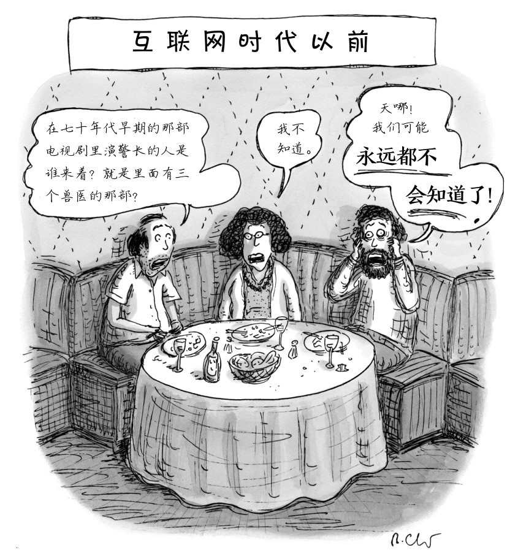

第六章
证言知识
别人是这么说的
在知识的领域中，我们许多珍贵的存货都是二手的。我们依赖于他人才得以掌握很多事情，从遥远地域的地理情况到朋友生活中的平凡故事，莫不如此。如果我们不能利用他人这个资源，就会丧失对很多话题的理解，这既包括古代的历史——除了我们可以通过个人的考古探险来发现的以外，也包括名人的婚礼——除非是我们也在受邀之列。显然，证言扩大了我们的视野，但问题在于解释这一切是如何做到的，以及能扩大到什么程度。听别人的话或者读别人写的东西，是否会以某种独一无二的方式给予我们知识？为了从别人那里获得知识，我们是否需要特殊的理由来信任他人？对于像维基百科这样的信息来源，其中绝大多数文章皆出自多人或匿名作者之手，我们又该如何看待？
一个极端的观点是，正如有些哲学家所主张的，证言从没有真正提供知识，约翰·洛克就是这一立场的著名代表。而在另一个极端，也有的哲学家论证说，证言不仅提供知识，而且还是以独特的方式提供知识的。按照这一观点，证言就是获取知识的特殊途径，这一路径与感觉经验和推理同样根本和重要。我们可以在古代印度哲学中找到这种观点，而它在当代英美哲学中也非常盛行。通过考察这两个极端的观点，以及一些主要的居中立场，我们就可能找出某些要素，它们被广泛认为对吸收他人的证言起到了非常重要的作用。
求知无门
证言什么时候能提供知识？有的哲学家认为，“从来没有过”。那么，为什么这些哲学家会怀疑证言知识的存在，即便并不同样地怀疑其他类型的知识呢？那就首先要厘清什么是所谓的“证言”。别人在证言的行为中告诉你某些事情——这既可以是通过言谈举止，也可以是通过写下来的东西——总之，他们告诉你的内容就是你在这项交流中的最大收获。即便是那些怀疑证言知识的人，也可能同意，倾听或阅读别人的言辞会产生普通的知觉知识。例如，设想一下，你看到有人在纸片上写下这句话：“我的书法很漂亮。”或者你听到别人说：“我的声音沙哑了。”如果你的确看到写下来的字很漂亮，或是听到了沙哑的声音，那么你也就知道别人的所写与所说乃是真的。但是，你此刻的知识是知觉性的，而非证言性的，因为所写所说的内容并没有在你的获知过程中产生特殊的作用：如果写下或说出的句子是“史密斯得到了那份工作”，那么它可以同样起到展现书法之美与声音之哑的作用。如果你基于我的证言相信了某件事情，那么你就理解我所说的话，并且也相信它。
在洛克看来，知觉知识与我们从证言中获得的东西之间有着明确的对立。例如，前者是知道你正听到的那个声音是沙哑的，后者是得到消息说史密斯得到了那份工作。关键的差异在于确定性，而洛克认为这是知识的必要条件。因为知觉可以给你对某件事情的直接的确定性，正如你直觉上就知道红色不是黑色那样，你就由此得到了知觉知识。洛克说，我们从证言中得到的东西最多也不过是有很高的可能性，而不会是有确定性的东西。在英格兰的冬日里，如果你看到一个人在冰封的湖面上行走，你就知道那个人正穿越这片湖。如果是别人告诉你说他看见有人正走过湖面，那么，只要你的信息源值得信任，且他所说的事情也符合你过往的观察，那么你就有理由相信这个报告很有可能为真，但你实际上对此仍然没有真正的知识。
你自己的背景经验发挥了重要的作用。洛克讲了这样一个故事：暹罗[2]国王听荷兰大使说起，在荷兰的冬季水会变得足够牢固，能撑起一个成年人甚至是一头大象的重量（前提是你真能引诱一头大象冬天去荷兰的话）。据说，那位国王回答说：“迄今为止你所告诉我的所有诡异事情我都相信，因为我看你是个足够清醒稳重的人，但现在我敢肯定你是说谎了。”洛克对于这位持怀疑态度的国王深表同情，因为他所有过往的经验都来自热带地区，对他而言，比起相信水会自然地变成固态，相信大使很有可能在说谎才更合理一些。
即便证言不可能很有确定性，它也或多或少可能为真，而洛克的建议是，从你已有的证据效力上来决定对证言持有多大的信心。他用一个复杂的公式来决定证言中合理的信心程度。首先，你要权衡一下它在多大程度上符合你的过往经验，然后你要考虑如下六个方面的因素：
1.有多少证人；
2.证人的诚实性如何；
3.证人的技能水平；
4.证人提供报告的目的；
5.报告内容的内在一致性，以及你听到这一报告时的具体情境；
6.有没有与之相反的证言。
尽管洛克认为证言并不传递知识，他也不认为我们应该笼统地拒绝相信别人告诉我们的事情。洛克说，一个通情达理的人一般会同意别人的证言。如果证言符合我们的经验，而且在上述六点检查清单中获得较高的分数，那么我们就从证言中获得了在实践目的上非常像知识的东西——“我们很容易接受它，且牢固地立足于它做出发展，仿佛它是确定的知识那样”。但是，我们从证言中得到的东西依然不同于“红色不是黑色”这样的发现。按照洛克的观点，证言中得到的东西仍然有可能在未来的经验中被颠覆。例如，你曾认为自己没有任何理由不信任他，而他告诉你看到有人横穿湖面是他虚构的，后来你又听十多个人说，那里的冰今天太薄了，根本无法在上面行走。洛克认为，这种对未来反面报告的脆弱性表明，我们从证言中得到的东西并不真的等同于知识。
稍后我们会简单分析一下对洛克论证的挑战，但在此之前，有必要先看一下他的观点实际上是多么激进。如果洛克是对的，那么当有人问“你知道你在哪儿出生的？”时，最合适的答案是“不知道”（假定与其他大多数人一样，你在这个问题上的信念是你的家人告诉你的，或是写在你的出生证明上的）。你可以说你很有可能出生于某地，但你对此从没有第一手的经验，因此你并不真的拥有知识。你也并不知道乔治·华盛顿曾是美国总统，或是地球上真的有南极洲（假设你从来没去过南极）。如果本书的读者是一个洛克主义者，他们甚至不能说自己知道洛克曾经在这个世界上活过，他们最多只能认为洛克很有可能活过。
显然，洛克会反对我们通常的一些说法，因为我们会很随意地把人们描述成从证言中获得知识。例如，“琼斯知道史密斯得到那份工作了吗？”——“是的，他已经知道了。我刚刚告诉他的。”然而，我们也会承认，在很多情况下这些通常的说法并不严格准确，就像我们说太阳升起来或者落下去，但实际上是地球在旋转那样。那么洛克是否有很好的理由认为，我们严格说来并没有从证言中获得知识？从对未来怀疑的脆弱性上论证证言不能给出知识，这是有问题的，部分是因为同样的理由也可以适用于由知觉和记忆给出的判断，而这些恰恰是洛克想要认可为知识的东西。洛克认为，知觉能给我们以知识，例如你现在在读书，而且过会儿你也会记得现在在读书，这就是从记忆中保持住了你的知觉知识。然而，你也有可能过后会怀疑你自己。即便你现在的确感知到了某些东西，你也可能将来怀疑它们，比如怀疑自己是否只是在做梦。但只要你当下的确是在感知而非做梦，洛克就不认为这种将来的怀疑会剥夺你当下主张的知识。但是，类似的论证却适用于证言：如果有人告诉你，史密斯得到了那份工作，而你实际上也没有对所说内容产生怀疑，那么你就应该获得了知识所要求的那种确定性。如果你过后又开始怀疑了，譬如说获得了某些相反的证言，那么你就可能失去那项知识，但这并不能证明你从来没有获得过那项知识。如果你的信息源是有知识的，那么你随后的怀疑就不能证明最初的判断非真：如果你的信息源知道史密斯得到了那份工作，那么这一点就必须为真。任何与之相反的报告都是迷惑性的。当然，在某些情况下你没有产生怀疑，直接采纳了说谎者的说法，把他说的当成真理，而这样的情况就类似于知觉中发生错觉时的情形。如果说在提供知识的能力方面，知觉与证言之间存在很大的差异，那么洛克并没有告诉我们这种差异究竟是什么。
中间地带：还原论
尽管洛克主张证言不能提供知识，但这种观点属于少数派。大多数哲学家都持有更为积极的态度。还原论就是一种较为温和的主流积极态度：我们的确从证言中获得知识，但证言提供知识的能力并没有什么特殊的。我们在阅读文字、倾听言谈或是观察他人的手势与符号语言时，都是在从普通的感觉经验中获得证言。假设一切都进行得十分顺利，感性知觉就会让我们知道说话者说出了某个句子。为了从这个句子中获得所说内容的知识，而不仅仅是“说话者如此这般地说”这个事实，我们就通常需要依赖推理与知觉的能力。这里仍然存留有某种洛克主义的东西：你去检查洛克开出的那个清单，以便考察证言为真的可能性——例如它与过往经验是否符合，说话者的诚实性是否有证据可以证明，等等。但是，当你所听到的证言在这个清单中得分足够高时，你就真的获得了关于那个在交流中呈现的命题的知识。这种思考证言的方式之所以被称为还原论，是因为它主张证言提供知识的能力可以还原为其他信息源提供知识的能力，特别是知觉、记忆和推理。
还原论有两种主要的类型：其一是全局（global）还原论，另一个则是局域（local）还原论。全局还原论认为，你自身对世界的经验会逐渐地教你认识到，一般而言，证言是不错的知识来源。比如，你是一个询问火车站方位的年轻人，有人来为你指点具体的位置，尽管你并不知道别人说的对不对，你却可以按照指示自己去验证证言的真实性。既然你总是可以对别人所说的话做再检验，那么一段时间以后你就会从过往证言的记录中找到知识，而这又进一步成为基于经验的理由，促使你去接受现在遇到的证言。对任何一个普通的成年人而言，只要别人告诉他火车站就在这条路一直走下去再右拐，那么他就能马上知道这一点。这并不是因为证言有某种独特的提供知识的能力，而是因为他自己过往的知觉、记忆和推理支持他去接受现在听到的东西。全局还原论者并不需要主张绝对相信任何证言：如果你处在一个存在大量颠覆性因素的境况中，你就需要考虑这些因素——例如，如果你知道自己正在跟一个很有说谎动机的人交流，那么你就要小心了。但是，当没有什么特别的危险信号存在时，全局还原论者就会认为，人们会有站得住脚的积极理由相信自己得到的证言。
局域还原论者则试图把问题谈得更精致化一些：他们没有去寻找某些能够支持信任所有证言的默认理由，而是主张每个人都应该在具体情境中找到特定的积极理由，再去接受自己在所交谈的主题下听得的证言。譬如我们会考虑这样一些具体的理由：证言的提供者是不是专家？他以前告诉过你的是不是真话？他现在给出的说法又有多少可信度？我们所依赖的这些特定理由最终也完全来自知觉、推理与记忆，而非证言自身。如果这些普通理由在给定的情境中足够有力，那么你就能从为真的证言中获得知识。
两种还原论都认为，大多数成年人都能知道自己出生在哪里，也知道世界上存在着南极洲。证言如果是来自亲近和受信任的目击者，譬如你的父母告诉你出生在哪里，或者是来自合适的专家，譬如众多地图制作者与旅行作家告诉你关于遥远大陆存在的事实，那么按照这两种还原论观点，证言都能提供知识。而如果没有信任消息源的具体理由，譬如你在陌生的城市里迷路了，此时你向完全陌生的人寻求方向的指引，那么全局还原论者仍然会认为你获得了知识，而典型的局域还原论者会否认这一点。局域还原论者会说，假如你足够幸运的话，你会得到一个真信念，但仍不是知识。
局域还原论的观点听起来充满了算计的意味，实际上我们并不总是能够在接受证言之前权衡信任与否的理由。然而，关于证言知识的局域还原论并不是一种描述我们事实上是如何在日常实践中形成信念的理论，而是要从理论上刻画使那些信念有资格成为知识的条件。即便我们在问路的时候倾向于盲目地信任陌生人，在局域还原论者看来，我们也不应该由此认为自己获得了知识。如果局域还原论是对的，那么知识的获得要求更多的谨慎和小心。采取这个立场就需要解释，何以基于证言的知识就要比基于知觉和推理的知识需要更多的谨慎小心。的确，证言可能让我们失望，譬如那些给我们消息的人可能不诚实，或者他们自己就没搞明白；但是，知觉同样可能让人失望，有时我们的眼睛会欺骗我们。那么为什么证言就更特殊一点呢？一个可能的理由是，证言会涉及某些有着自己目的的自由行动者。例如，人类的交往与蜜蜂之间的信息传递不同，后者可以以可靠的信号告知彼此哪里能找到有花蜜的植物。如果一只蜜蜂是从其他蜜蜂那里得知花蜜的方位的，那么它就能直接飞到那里去，就好像它曾亲眼看到了那里一样。在这个意义上，蜜蜂的信号表达把彼此经验的好处分享给了其他蜜蜂，有时这个过程被称作“代理性认知”（cognition by proxy）。即便如此，蜜蜂的信号也可能有缺陷，譬如这只蜜蜂生病了，或是有花蜜的植物随后被研究员移动了位置，但这些缺陷就像是我们的感官缺陷一样——当我们生病或是物件在我们不知情的情况下被人移动时，我们的认知也会出错。然而，蜜蜂可以从其他蜜蜂那里直接地获取经验，是因为它们不会故意地欺骗彼此。因此，局域还原论者可能会强调，对于如我们这般狡猾的人类，彼此之间的交往与信息传递就需要格外小心谨慎。
或者，局域还原论者也反对说我们常盲目地听从陌生人的建议。也许我们通常确实都是谨慎小心的，只不过往往感受不到，因为我们并没有明显地权衡信任别人的那些理由。最近有一些对“知识性戒慎”（epistemic vigilance）的经验研究，极大地推进了我们对实际上如何接受他人证言的理解。即便我们没有明确地思考那个被我们问路的陌生人的话是否可靠，我们也还是会密切注意他的面部表情和言谈方式，以评估他是否值得信任。那么，局域还原论究竟是不是一种十分合乎真实情况的理论呢？抑或是它指出了真实情况的草率，我们根本就没有那些我们自以为通常拥有的知识？这就必须要靠对真实情况的更好洞见来帮助我们做判断。
证言：知识的一种独特来源
还可能有一种更为一般化的证言理论。这种理论没有把证言当作依赖于其他认识路径的东西，譬如依赖于过往的经验与推理，而是认为证言本身就是知识的基本来源之一。这就是证言的直接观点，有时也被称为“默认观点”。按照这种观点，如果一个消息灵通的同事告诉你史密斯得到了那份工作，那么“史密斯得到了那份工作”就成为你的知识，而且你的这项知识并不依赖于你的任何推理——比如关于该同事的可靠性及他以往的证言记录的推理。为了获得这项知识，你所需要做的仅仅是理解这位消息灵通人士的话。当然，证言的通道还是要从感觉经验中摄取信息，譬如说你总得能听到别人说的话，能读懂别人写的字；推理也会从感觉经验中提取信息，例如当你看一个完成了一半的数独游戏并且开始作答时，就是这样的。但我们不会因此否认证言是独特的认识路径，正如我们也会承认推理是区别于纯粹知觉的认识路径一样。在理解别人的话时你的思维方式，迥异于你亲自看到某些事情时的思维方式，更区别于你在推理或解谜时的思维方式。
证言的直接观点有着久远的历史。公元2世纪的印度哲学家阿克沙巴德·乔达摩就曾主张过这种观点。乔达摩认为，证言是人们获取知识的特殊路径，强调它并不是任何一种类型的推理。也就是说，我们不会做这样的内心独白：“李先生说史密斯得到了那份工作，而李又是个可靠的人，所以史密斯得到了工作。”恰恰相反，一旦我们理解了李先生说的话，我们也就知道史密斯得到了那份工作。我们也可以关注到这样一个事实：是李先生告诉我们这个事情的，但这并不是我们所获得的主要内容。与局域还原论不同的是，直接观点可以毫无问题地从陌生人那里获取知识：按照古代印度哲学的思路，知识不仅可以从大师或者“贵人”那里直接获得，而且也可以直接得自“野蛮人”，只要他们的确有知识且愿意分享。
当代的直接观点强调，对证言的信任在语言获取和人们的日常交往实践中发挥了重要作用。还原论者和洛克主义者都认为，在人们能够以自己的知觉或推理能力证实证言以前，最好对公共证言采取一种中立的立场；而直接观点的支持者却认为，就这种类型的证实任务来说，我们并没有充足的能力。例如，知道语词的意义非常重要，但只有当别人直接地告知我们某些事情之后，我们才可能获得如此重要的知识。如果我们甚至从一开始就不信任别人会说真话，不接受别人的话的字面意思，我们也就完全不可能相互理解。从这个意义上说，我们的确在某种程度上像蜜蜂那样从别人的话中吸吮着养分。
即便对于那些最慷慨的直接观点来说，证言知识仍有某些必须满足的条件：为了获取知识，你的信息源所说的话必须实际上为真，并且你的信息源也必须知道它为真，而不能只是撞大运的猜测，至少对大多数非还原论者来说都是这样。柏拉图关于这一点有一个生动的例子。他描述了一个能说会道的律师，他试图为他的当事人洗脱一项袭击案的指控。这个当事人的确无罪，但没有目击证人站出来支持他。所以，尽管这个律师自己也不知道他所说的话是否为真，他的确做了很大的努力，以他的个人魅力使陪审团相信他的当事人是无罪的。然后，柏拉图追问道，既然陪审团成员完全是受这位魅力型律师的影响，那么他们真的知道被告是无罪的吗？答案似乎是否定的。你要想从某个信息源那里获取知识，那个信息源他自己就得先知道事实。
詹妮弗·拉基是当代主要的证言理论家之一。她把证言知识要求“从已知者获取知识”的条件形象地刻画为“传递水桶的一字长蛇阵”（bucket brigade）。“为了给你满满的一桶水，我必须先有一桶水才能传递给你。此外，如果我给你的是满满一桶水，那么在不考虑洒出水的情况下，在完成这种传递后你所得到的也应该是满满一桶水。”这里，“洒出”的情况就对应于你没听到我说的话，或是有人恶意中伤我是说谎成性的骗子，而你就因此对我起了疑心。不管是古代的还是当代的直接观点，它们都认为，只要你对证言的真理性有所怀疑，那么，即便提供证言的人再有知识，即便你的怀疑事实上根本不合理，你就已经丧失了由证言获取知识的畅通路径。
我们只能从已经有知识的人那里才能获得证言知识吗？拉基对此表示怀疑。设想一下，一位教师对于她被要求讲授的科学理论有所怀疑——譬如说，这个老师是相信“地球还很年轻”的创世论者，而她所讲授的却是自然选择的进化论，照此理论，人类是进化而来的产物，与其他灵长类动物有共同祖先——那么，这个老师就并不真的拥有“自然选择理论为真”的知识，她甚至根本不相信这一点。但是，她却按照国家课纲的要求把科学理论不遗余力地传授给课上的学生。如果信任这位教师的学生在其证言的力量下相信了进化论，难道我们不能说这些学生获得了关于自然选择的知识吗？如果拉基是对的，那么在这样一个例子中，一个自己都还没有“满满一桶水”的人传递出了比自己所拥有的更多的知识。
当然我们还能找到其他类似的方式，都能让人们传递出比自己所知道的更多的知识。一种办法是与他人合作。现在，我可以说自己知道“威拉米特河在美国西北部的俄勒冈海岸山脉和喀斯喀特山脉之间向北流去”。之所以知道这一点，是因为我从维基百科上查到了这个知识，而且做了反复确认。也许正是某个真正知道这一事实的人首次更新了维基百科上的页面，那么也就是真的有充分知识的人通过互联网把他所拥有的知识传递给了我。但也有可能是，那个更新维基页面的人自己也不完全知道这一点，譬如说他可能对岸边山脉的名称并不很确定。然而，一段时间以后，这个词条经过很多人的审核补充，而这些词条编辑人员作为一个群体保证了山脉名称的最终报告的正确性。所以，这个群体也许成功装了“满满一桶水”，也即拥有了充分的知识，共同保证了维基的词条能够给读者提供知识。如果信息来源的可靠性是真正重要的东西，那么在恰当条件下的通力合作要远比单个作者表现得好。
这个例子可以按照不同的理论做不同的处理。例如，洛克主义者会说，我们从维基百科中得到的有关威拉米特河的内容，其实只不过是很可能为真的意见，并不是知识，即便有再多信息源告诉我们完全合理的事实，情况也依然如此。而一个还原论者会说，我们从这里获得的任何知识都是推论性的：按照这个论调，只有对那些已经意识到维基百科的词条是可靠的人来说，相关的词条才真的传递了知识。例如，如果你读过2005年《自然》杂志上的一篇文章，其中报告说维基上的词条就准确性而言堪比《不列颠百科全书》，又或者你曾经亲自验证过维基词条的准确性的话，那么那个关于威拉米特河流向的词条就的确传递给了你知识。如果是直接观点的支持者，他会认为，即便对那些尚未认识到维基百科准确性的人而言，只要它的质量控制体系运转正常，它就可以提供关于事实的知识。按照这个观点，任何一个准备学校报告的12岁少年都可以由此得知河流两岸的山脉名称，只要阅读威拉米特河的维基词条就足够了。就直接观点本身而言，如果是传统立场的话，它会要求那些撰写或编辑这个词条中关键词句的人知道所报告的事实；然而，现在的直接观点也可以做出某些调整以便容纳这样的事实，即我们不是从单个的已知者那里获得知识，而是受惠于某个匿名的群体，其中每一个个体都只有部分的而非全部的知识。随着证言的知识论结构研究日益进展，还会涌现更多的信息渠道，以提供新的机会让相互对立的理论各自解释知识的社会传播，从而相互竞争下去。

图7 过去几代人的痛苦
一般而言，知识论都是在考察完了知觉和推理以后才会转向讨论证言，但也有一些哲学家把它放在通向知识的核心位置上。在这方面最值得注意的是英国哲学家爱德华·克雷格。他认为人们之所以需要知识的概念，目的就是为了处理证言问题：我们把那些能作为好的信息源的人标记为有知识的人。克雷格的这个观点来自这样一个前提：所有生物都企图努力生存下去，而这就需要有与其环境相关的真信念。如果我们不受限于自己所经历过的东西，而是也能够从别人那里学习的话，那么这将极大地帮助我们生存下去。所以我们就迫切地需要有一种能够辨别好的信息源的方法，以便能让这些好的信息源成为我们的耳目；同时我们也需要鉴别出那些坏的信息源，以便知道哪些人的话有可能把我们引入歧途。由此，好的信息源就被确认为有知识的人。
这样看来，克雷格掉转了通常的解释方向：大多数知识论专家认为，成为有知识的人是成为一个（潜在的）好信息源的先决条件；与此相反，克雷格认为，“好信息源”乃是一个更为基础的观念，正是它解释了知识概念的价值及其起源。克雷格的批评者强调说，有知识的人有时也可以是坏的信息源，因为他可能要保密或是故意欺骗别人。此外，克雷格的理论还难以解释另外一些关于知识的直觉。例如，为什么盖梯尔反例中的认知者就没有知识？这用克雷格的理论就很难解释。因为在盖梯尔反例中，那些认知者也可以在某种意义上是好的信息源——作为一个拥有得到辩护的真信念的人，认知者的确可以提供正确的信息，并且在某种意义上他的思考也是可靠的。同时，克雷格理论的进化论维度也是可以存疑的。譬如说，对与我们亲缘关系最近的动物近亲的研究表明，它们也可以区分有知识与无知的状态，但不是在克雷格所认为的更为基本的意义上做的区分。在实验中，黑猩猩无从辨别哪些是能告诉它们食物位置的有知识的信息源，哪些又是对此一无所知的信息源。但是当存在彼此之间的资源竞争时，黑猩猩的确能够追踪谁有哪些知识。例如，低等级的黑猩猩就非常善于记住地位更高的猩猩是否知道食物的位置。由此看来，知识与行为之间的关联要比知识与“好信息源”之间的关联更容易确认。尽管证言的确是知识论的重要主题之一，它却未必会作为我们所有讨论的出发点。